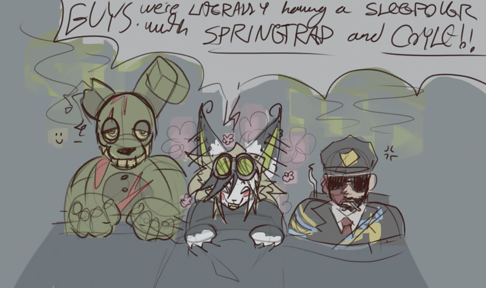
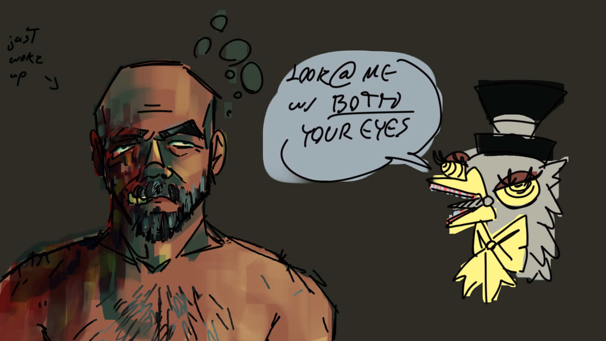

FANART
Sucking smoke... God bless ... ' '
Mental issues have been making it harder to draw, but I add what I can when I can...
Hint: Clicking on an image lets you see it fully in a new tab

Me and my harem

Wanted another excuse to draw his face. Tried to emphasize his electrical burn scarring and still playing around with having his cheek burnt through.
Me and my bestie's favorite prime assets